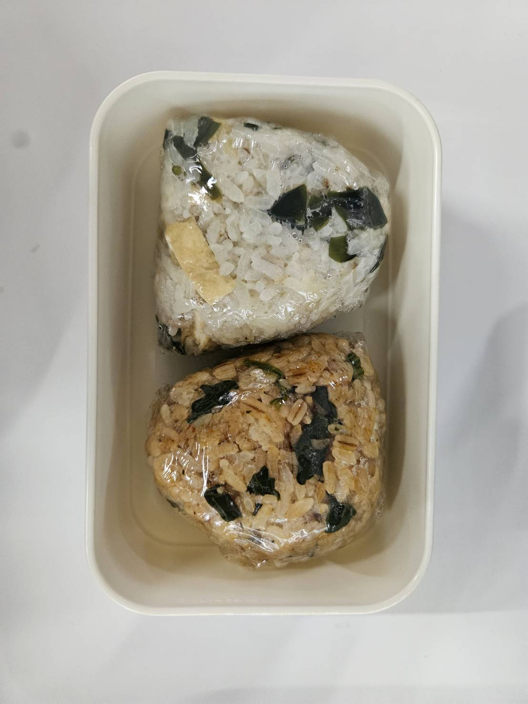
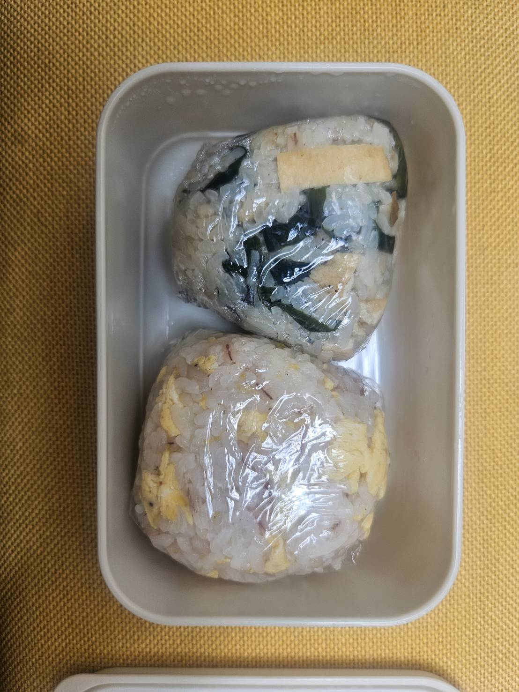
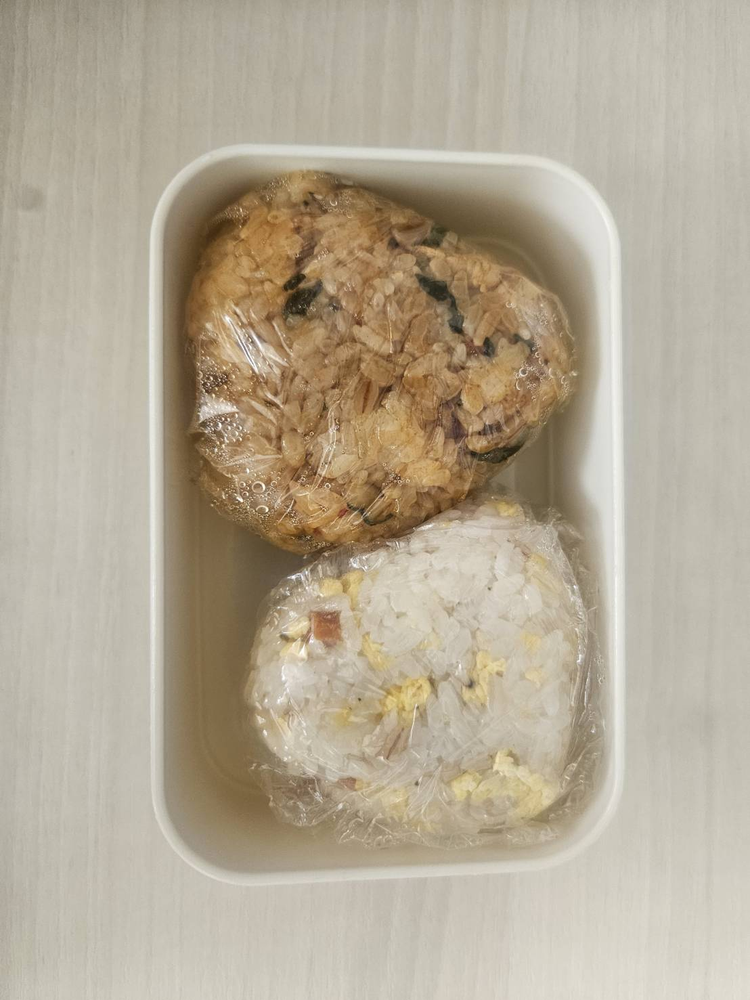

- トップ >
- 今日のおにぎり
今日のおにぎり
今日のおにぎりの写真と食べてみた感想を投稿します！温めてから食べた方が美味しいや、香りがどうかなど、お弁当にした気づきもコメント。
2026.4/26のおにぎり

『ほうれん草と焼肉のおにぎり』＆『ワカメとお揚げと佃煮のおにぎり』
▶ほうれん草と焼肉のおにぎり（レンチン）
豚肉に焼肉のたれの味がしっかりついていておいしかった。においは気にならないけど、豚肉の油で手がべたべたになって少し食べにくい。豚肉を少し小さく切ると食べやすい。
▶ワカメとお揚げと佃煮のおにぎり（レンチン）
わかめとお揚げは薄味なので、昆布の佃煮が良いアクセントになって美味しかった。少し水分が多くべちゃっとしていた。
2026.4/27のおにぎり

『ワカメとお揚げと佃煮のおにぎり』＆『炒り卵とソーセージのおにぎり』
▶ワカメとお揚げと佃煮のおにぎり（そのまま）
温めずに食べた方がべちゃっと感がなく美味しかった。水分量が多そうなおにぎりはそのまま食べる方が私は好きでした！
▶炒り卵とソーセージのおにぎり（そのまま）
炒り卵とソーセージをごま油で炒めたため、香りが良く、味のアクセントにもなって美味しかった。ごま油の香りが気になる人もいるかもしれないので、嗅覚が繊細な方は苦手かもしれません。
2026.4/28のおにぎり

『ほうれん草と焼肉のおにぎり』＆『炒り卵とソーセージのおにぎり』
▶ほうれん草と焼肉のおにぎり（そのまま）
焼肉の油が固まっているせいか、ご飯の味が薄く感じた。食べやすいのはそのままだけど、美味しいのは温めた方でした。
▶炒り卵とソーセージのおにぎり（そのまま）
そのままでも美味しかったです。今週のMVPおにぎりです！